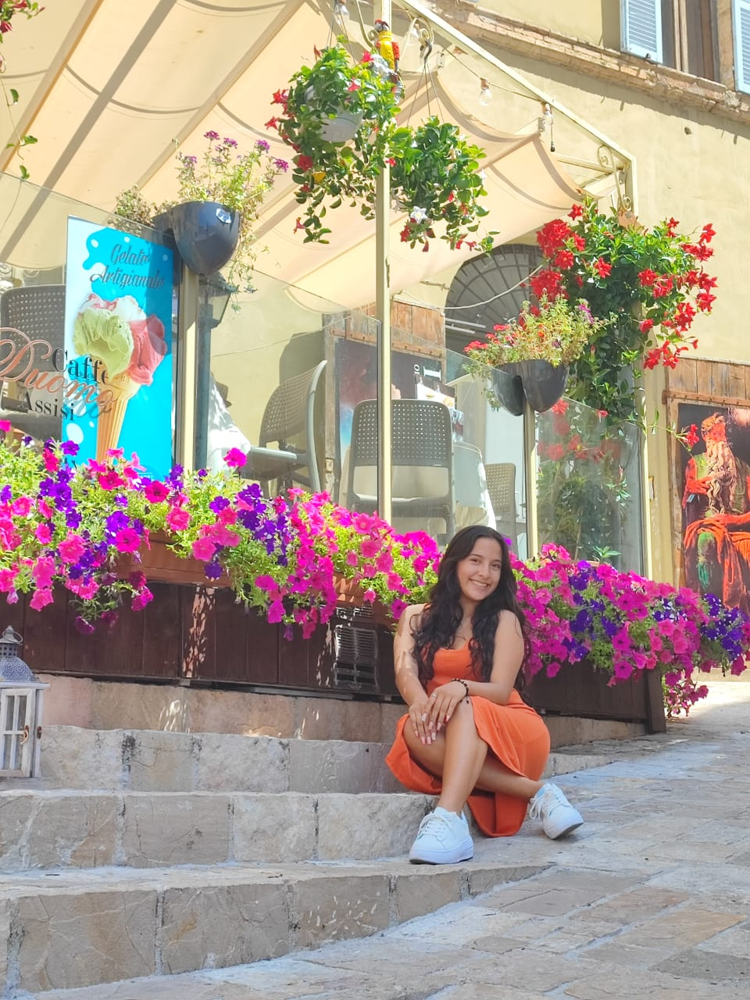
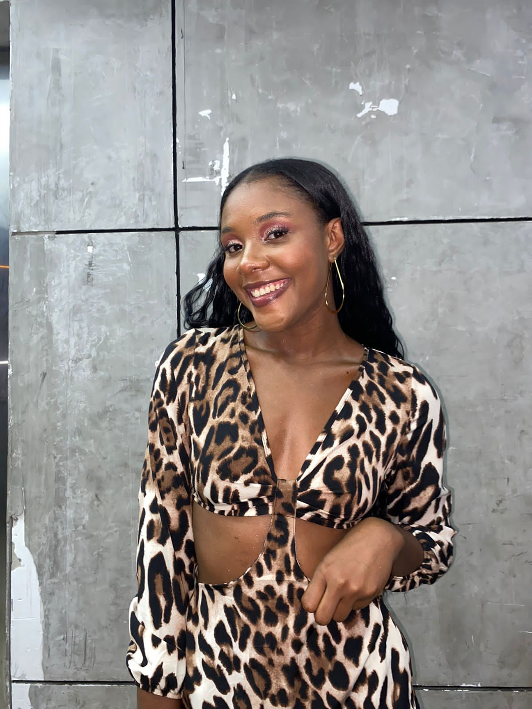
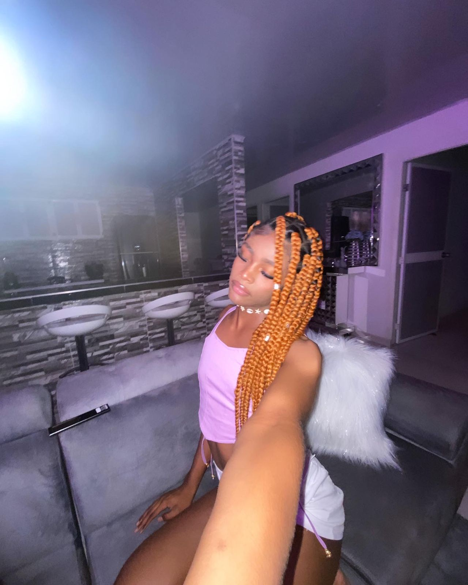
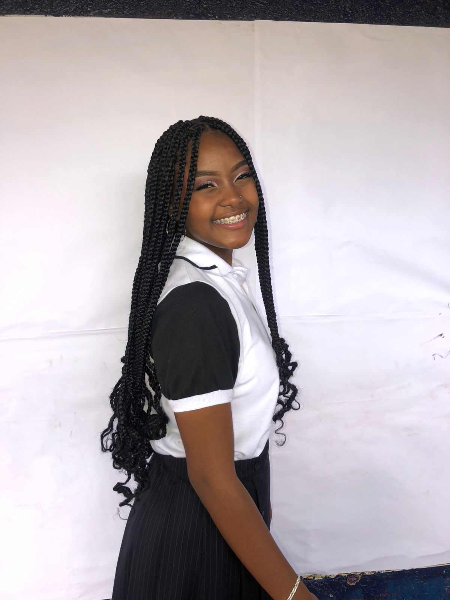

Edad:19
Estoy próxima a estudiar licenciatura en danza
baile me gusta porque estoy algo que me ayuda a salir de mi zona de confort, donde puedo ser yo misma, el baile siempre me ha apasionada desde que tengo memoria y es una profesión que quiero seguir ejerciendo para tener un gran futuro.
ISABELLA
baile me gusta porque estoy algo que me ayuda a salir de mi zona de confort, donde puedo ser yo misma, el baile siempre me ha apasionada desde que tengo memoria y es una profesión que quiero seguir ejerciendo para tener un gran futuro.
VALENTINA
bailo desde que tengo memoria en mi corta vida he tenido la oportunida de poder bailar ritmos distintos me encanta poder vivir experiencias nuevas haciendo algo que amo, nunca pense en poder tener un grupo de mujeres empoderdas pero gracias a todas las intengrantes aqui esta dancing un grupo pequeño y ha ido logrando muchas cosas poco y esperamos lograr mas.

edad:22
Psicóloga graduada
Bailo porque es un arte que no se limita al cuerpo, sino que va al alma de quien realmente lo siente y lo disfruta. Bailo porque me fluye, porque puedo ser yo misma cuando lo hago y porque realmente me apasiona. Bailo porque Bailar me da vida.
PAOLA
Bailo porque es un arte que no se limita al cuerpo, sino que va al alma de quien realmente lo siente y lo disfruta. Bailo porque me fluye, porque puedo ser yo misma cuando lo hago y porque realmente me apasiona. Bailo porque Bailar me da vida.

ZULY
me gusta el baile por qué es mi pasión y cada paso que doy es mi motivación de seguir

Edad:16
futura Estudiante de comunicación social y periodismo
Bailo porque para mi es una pasión, me gusta mucho, siento que es una forma de expresar muchos sentimientos, es una forma de liberarse, bailar es libertad, para mi significa mucho.
LAURYN
Bailo porque para mi es una pasión, me gusta mucho, siento que es una forma de expresar muchos sentimientos, es una forma de liberarse, bailar es libertad, para mi significa mucho.

edad :16 años bachiller
Me gusta el baile por que me ayuda a despejar mis pensamientos & es mi forma de expresar como me siento a través de el
MARIANA
Me gusta el baile por que me ayuda a despejar mis pensamientos & es mi forma de expresar como me siento a través de el